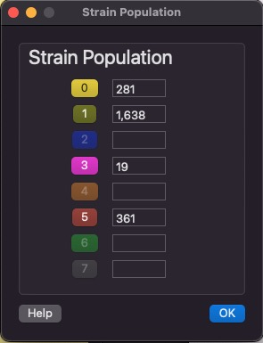

VOLVE 5.0
VOLVE 5.0
Strain Population Dialog
This dialog shows the population of each strain.

This dialog shows the current population of that strain. If a strain was not used, then blank will be shown on this dialog. In this example, only four strains 0, 1, 3, and 5 were specified.
If some of the organisms have radioactive tracers, then the green numbers will be the count of radioactive organisms (by strain). See: